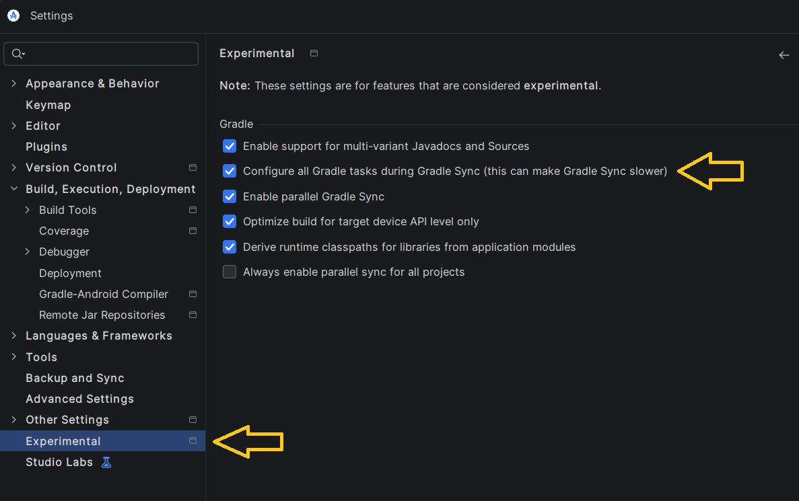
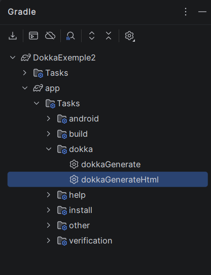

Documentation KDoc¶
Générer la documentation à l'aide de Dokka
Chaque langage de programmation propose ses propres normes de documentation.
Dans le monde de Kotlin, la documentation du code est réalisée à l'aide de KDoc.
Par exemple, pour documenter une fonction :
/**
* Vérifie si la réponse est bonne.
*
* @param reponse La réponse à valider.
* @return true si valide.
*/
fun valider(reponse: String): Boolean {
...
}
Exemple avec hissage d'état :
/**
* Vérifie si la réponse est bonne.
*
* @param reponse La réponse à valider.
* @param onValideChange Lambda pour retenir si valide ou non.
*/
fun valider(reponse: String, onValideChange: (Boolean) -> Unit) {
Exemple pour une fonction composable :
Ou encore :
/**
* Contenu principal.
*
* @param innerPadding Espace à appliquer pour que le contenu ne soit pas sous les barres d'application.
*/
@Composable
fun MainContent(innerPadding: PaddingValues) {
Et pour une classe :
/**
* Gestion des préférences utilisateur.
*
* @author Christiane Lagacé, inspiré de https://medium.com/@rowaido.game/persistent-data-storage-using-datastore-preferences-
in-jetpack-compose-90c481bfed12
*
* @property dataStore DataStore qui stocke les préférences utilisateur.
*/
class UserPreferences(private val dataStore: DataStore<Preferences>) {
...
}
Autre exemple :
/**
* État du UI de l'écran d'accueil.
*
* @author Christiane Lagacé
*
* @property _points Nombre de points obtenus
* @property _partieTerminee Indique si la partie est terminée
*/
data class HomeUiState(
private val _points: Int = 0,
private val _partieTerminee: Boolean = false
) {
...
}
Pour plus d'information¶
Plugin Android Studio / IntelliJ pour générer la structure des commentaires KDoc¶
KDoc-er est un plugin populaire pour Android Studio ou IntelliJ. Il permet de générer facilement la structure des commentaires KDoc.
Pour l'installer :
Dans Android Studio, rendez-vous dans le menu File / Settings / Plugins (Windows) ou Android Studio / Settings / Plugins (macOS).¶
Dans l'onglet Marketplace, recherchez KDoc-er.¶
Cliquez sur Install.¶
Désormais, quand vous tapez /** au-dessus d'une fonction ou d'une classe, KDoc-er générera le squelette de la documentation. À vous de l'ajuster et de le compléter.
Voici par exemple ce qui est généré automatiquement pour cette fonction.
/**
* Color to string
*
* @param couleur
* @return
*/
fun colorToString(couleur: Color) : String {
...
}
Et voici la documentation après qu'un développeur l'ait ajustée et complétée.
/**
* Convertit un objet de type Color en une chaîne qui représente cette couleur.
*
* @param couleur Objet Color. Valeurs supportées : Color.Blue, Color.Black, Color.White, Color.Red.
* @return Chaîne qui représente la couleur. Valeurs possibles : Bleu, Noir, Blanc, Rouge.
*/
fun colorToString(couleur: Color) : String {
...
}
Générer la documentation à l'aide de Dokka¶
Une fois que les classes et fonctions sont correctement documentées, il est possible de générer automatiquement la documentation au format HTML à l'aide de Dokka.
Installation du plugin Dokka¶
Pour commencer, vous devez activer le paramètre de Gradle pour configurer et afficher toutes les tâches disponibles.
Pour ce faire, dans Android Studio, rendez-vous dans le menu File / Settings / Experimental et cochez la case Configure all Gradle tasks.

Ensuite pour utiliser le plugin Dokka pour Gradle dans votre app, vous devez ajouter la dépendance suivante à votre fichier app/build.gradle.kts :
Puis faites une synchronisation du projet pour que Gradle prenne en compte cette nouvelle dépendance.
La tâche dokka/dokkaGenerateHtml devrait être disponible dans la section Gradle (icône de tête d'éléphant dans la barre d'outils à droite de l'IDE)

Un lien vers un serveur local sera généré dans le terminal d'Android Studio. Vous pourrez cliquer sur ce lien pour visualiser la documentation générée.
RÉFÉRENCE POUR L'UTILISATION À LA LIGNE DE COMMANDE (OPTIONNEL)¶
Variable d'environnement JAVA_HOME¶
Pour utiliser Dokka, vous aurez besoin d'une variable d'environnement nommée JAVA_HOME.
Ces manipulations permettront d'utiliser Dokka sur l'ensemble de vos projets.
Pour vérifier si JAVA_HOME existe sous Windows, ouvrez une fenêtre Terminal et entrez cette commande :
Sous Mac, entrez plutôt ceci :
Si la variable n'existe pas ou si elle pointe sur une version de Java inférieure à 17, créez-la ou mettez-la à jour.
Notez qu'une version de Java a été installée avec Android Studio. Il s'agit de Java JBR (JetBrains Runtime), une version optimisée du JDK (Java Development Kit) et dont la version est suffisamment récente pour Dokka.
Pour créer la variable d'environnement JAVA_HOME sous Windows :
Appuyez sur les touches Windows + I.¶
Cliquez sur Système dans la zone de gauche.¶
Cliquez sur À propos de (ou Informations système selon votre version de Windows) au bas de la zone de droite.¶
Cliquez sur Paramètres avancés du système.¶
Cliquez sur Variables d'environnement.¶
Dans la zone Variables système, cliquez sur Nouvelle.¶
Nom de la variable : entrez JAVA_HOME.¶
Valeur de la variable : entrez le chemin du dossier d'installation de Java. Typiquement, quand Java a été installé avec Android Studio sous Windows, ce chemin est C:\Program Files\Android\Android Studio\jbr.¶
Enregistrez la configuration puis redémarrez votre ordinateur.¶
Sous macOS :
Pour trouver le chemin d'installation de Java avec une installation d'Android Studio, ouvrez le Finder puis faites un clic droit sur le fichier Applications/Android Studio.app.¶
Choisissez Afficher le contenu du paquet.¶
Le chemin cherché devrait ressembler à /Applications/Android Studio.app/Contents/jbr/Contents/Home. Pour copier ce chemin, faites un clic droit sur le dossier puis, en appuyant sur la touche Option, choisissez Copier en tant que nom de chemin.¶
Ouvrez maintenant une fenêtre Terminal.¶
Lancez cette commande pour éditer le fichier de configuration du shell :¶
Ajoutez cette ligne au bas du fichier en ajustant le nom du chemin à ce que vous avez trouvé plus haut. Notez l'ajout d'une barre oblique inverse devant l'espace.¶
Enregistrez le fichier puis redémarrez votre ordinateur.¶
Configuration du projet¶
Maintenant que la variable d'environnement JAVA_HOME est correctement configurée, vous pouvez procéder aux configurations du projet.
Dans le fichier build.gradle.kts principal (aussi appelé top-level build.gradle file), soit celui présent directement à la racine du projet, ajoutez ceci :¶
plugins {
...
// pour Dokka
id("org.jetbrains.dokka") version "2.2.0" apply false
}
Ajoutez ceci dans le fichier build.gradle.kts qui se trouve dans le dossier app.
Une fois ces lignes ajoutées, il faut resynchroniser le projet pour qu'il en tienne compte.
Génération de la documentation¶
Pour générer la documentation :
Ouvrez une fenêtre Terminal dans Android Studio : View / Tool Windows / Terminal.¶
Entrez-y la commande qui lance la génération :¶
Ceci a généré le fichier app/build/dokka/html/index.html. Ouvrez ce fichier dans un navigateur. En naviguant dans les liens qu'il propose, vous reconnaîtrez la documentation KDoc que vous avez ajoutée à votre code et même plus!¶